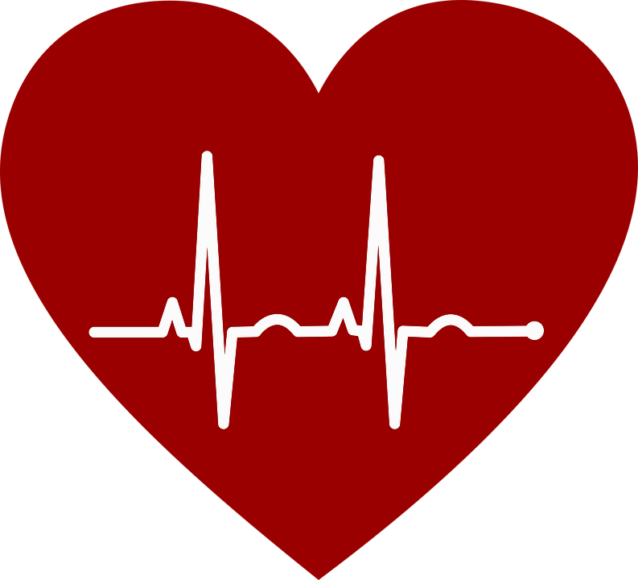

Importance of Maintaining a Healthy Lifestyle
Physical fitness is not the sole basis of being healthy being healthy means being mentally and emotionally fit. Being healthy should be part of your overall lifestyle. Living a healthy lifestyle can help prevent chronic diseases and long-term illnesses. Feeling good about yourself and taking care of your health are important for your self-esteem and self-image. Maintain a healthy lifestyle by doing what is right for your body.
key ways Health trackers, apps and wearables can boost your health
One of the best ways to embrace a healthier lifestyle is to track where you started and where you're headed. Change takes time, and you usually don't see results overnight. But with a health tracker, you can see the benefits of taking brisk walks after dinner or resisting those Friday donuts. And the more you see how well you're doing, the more likely you'll stick with it